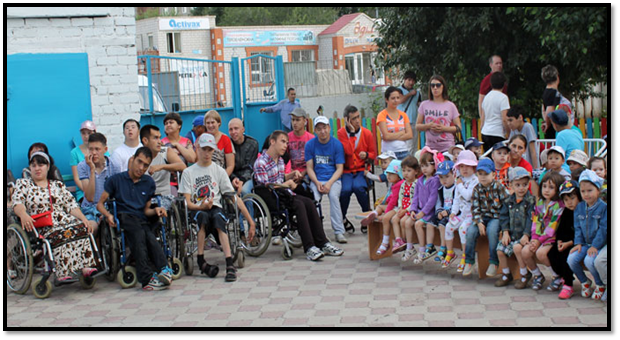
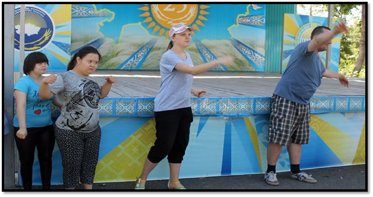
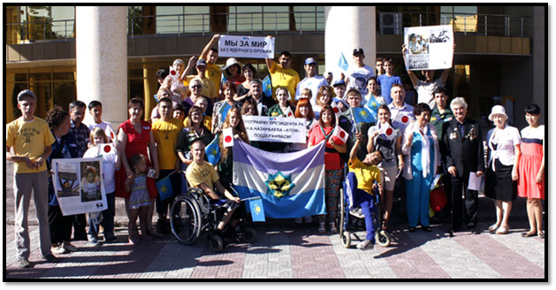
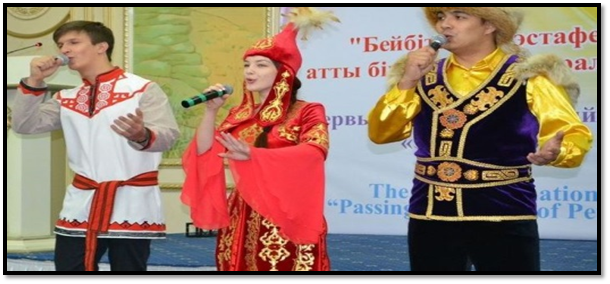
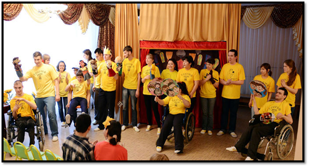
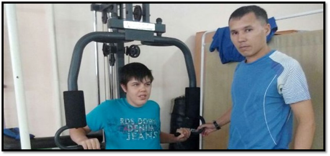

Реабилитационный центр "Самал"
"Чтобы помочь другому человеку, не обязательно быть сильным и богатым,- достаточно быть добрым".
Общественное Объединение Инвалидов «Реабилитационный Центр «Самал» – это общественное учреждение, осуществляющее социальную реабилитацию детей и подростков с ограниченными возможностями, в том числе детям с ограниченными возможностями в возрастной категории до 18 лет, и молодежи старше 18 лет.

Миссия ООИ РЦ «Самал»: социальная адаптация и интеграция детей и подростков с ограниченными возможностями в общество.
Основная Цель деятельности: оказание комплексной медико-психолого-педагогической помощи детям и подросткам с ограниченными возможностями.
Основными задачами Центра являются:
- осуществление мероприятий по комплексной реабилитации с применением инновационных технологий в сфере предоставляемых социальных, педагогических, психологических и медицинских услуг с целью восстановления нарушенных или утраченных функций здоровья;

- создание безбарьерной среды для интеграции детей и подростков-инвалидов в общество через привитие навыков общения и вовлечения в мероприятия (обучающие тренинги, культурно-массовые и спортивные мероприятия);

- включение родителей (законных представителей) в процесс воспитания и обучения ребенка;
- всестороннее развитие личности инвалида с охватом всех сфер его увлечений, а также социально-бытовая и трудовая ориентация.

Здесь созданы все условия для лечения, обучения, организации досуга детей, облегчения их интеграции в общество, подготовки к самостоятельной жизни.

Для решения поставленных задач Центр располагает необходимой материально-технической, учебно-методической и информационной базой, имеет лицензию на осуществление медицинской деятельности, укомплектован штат специалистов, соответствующий квалификационным требованиям, имеется помещение для организации реабилитационных мероприятий, образовательной деятельности.
Все кабинеты оснащены необходимым оборудованием – мебелью, бытовыми и медицинскими приборами, ТСО, пособиями, игрушками, вспомогательными средствами для передвижения получателей услуг.
Данные помещения располагают необходимым оборудованием и материалами по профилю своей деятельности, отвечают санитарно-гигиеническим требованиям и обеспечивают полноценные условия для умственной, двигательной, игровой детской деятельности и осуществления коррекционной работы.

Все виды предоставляемых услуг осуществляются согласно Стандарта оказания специальных социальных услуг в области социальной защиты населения в условиях полустационара от 26 марта 2015 года №165. Услуги предоставляются на основе государственного социального заказа по трем программам:
- Оказание специальных социальных услуг в условиях полустационара;
- Предоставление специальных социальных услуг в условиях полустационара детям с психоневрологическими патологиями в г.Павлодар;
- Предоставление специальных социальных услуг в условиях полустационара лицам старше 18 лет с психоневрологическими патологиями в г.Павлодар;
Основным направлением деятельности ООИ «РЦ «Самал» является медико-социальная реабилитация. Целью медицинской реабилитации является вторичная профилактика, т.е. предупреждение прогрессирования заболевания, развития осложнений и рецидивов, профилактика тяжелых функциональных нарушений.